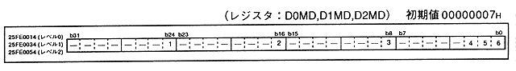

Figure 3.10 Level 2-0 DMA mode, address update, activation factor selection register (Register: D0MD, D1MD, D2MD) Initial value 00000007H

Table 3.4 Startup factor details
Start factor bit (x = 2−0) | Start factor | ||||||||||||||||||||||
DxFT2 | DxFT1 | DxFT0 | |||||||||||||||||||||
0 | 0 | 0 | |||||||||||||||||||||
0 | 0 | 1 | |||||||||||||||||||||
0 | 1 | 0 | |||||||||||||||||||||
0 | 1 | 1 | |||||||||||||||||||||
1 | 0 | 0 | |||||||||||||||||||||
1 | 0 | 1 | |||||||||||||||||||||
1 | 1 | 0 | |||||||||||||||||||||
1 | 1 | 1 |